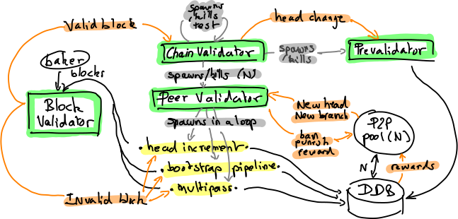

The validation subsystem#
This document explains the inner workings of the validation subsystem of the Tezos shell, that sits between the peer-to-peer layer and the economic protocol. This part is in charge of validating chains, blocks and operations that come from the network, and deciding whether they are worthy to propagate. It is composed of three main parts: the validator, the prevalidator, and the distributed DB.

Concepts#
Before presenting these three components, we define some basic concepts.
Block#
The Tezos blockchain is a linked list of blocks (or actually, a tree when several competing branches exist). Blocks conceptually contain a header and a list of operations. In the implementation, the list of operations in the block is represented as the hash of the Merkle tree containing them.
The header itself decomposes into a shell header (common to all protocols) and a protocol-specific header.
Fitness#
To each block, we associate a measure of fitness which determines the quality of the chain leading to that block. This measure is computed by the consensus protocol. The shell changes the head of the chain to the valid block that has the highest fitness.
The fitness belongs to the shell part of the block header. The shell does not know the exact representation of the fitness, except that it has a total order on it.
Shell header#
The shell header contains:
level: the height of the block, from the genesis block.proto: number of protocol changes since genesis (modulo 256).predecessor: the hash of the preceding block.timestamp: the timestamp at which the block is claimed to have been created.validation_pass: number of validation passes. Indeed, operations included in a block may be validated in several passes. This enables some kind of operations (e.g., consensus operations) to be validated in priority.operations_hash: Hash of the list of lists (actually root hashes of Merkle trees) of operations included in the block. There is one list of operations per validation pass.fitness: a sequence of sequences of unsigned bytes, shortlex-ordered (by length and then lexicographically). It represents the claimed fitness of the chain ending in this block.context: the hash of the state of the context after application of this block.
The rest of this page presents the three components of the validation subsystem.
Validator#
The validator is the component responsible for checking that blocks coming from the network or a baker are valid, w.r.t. the rules defined by the economic protocol, and for selecting the block that it considers to be the current head of the blockchain, based on its fitness.
The validator is written as a collection of workers: local event loops communicating with each other via message passing. Workers are spawned and killed dynamically, according to connected peers, incoming blocks to validate, and active (test)chains.
A chain validator worker is launched by the validator for each chain that it considers alive. Each chain validator is responsible for handling blocks that belong to this chain, and select the best head for this chain. A chain validator is spawned for the main chain that starts at the genesis, a second one when there is an active test chain. Forking a chain is decided from within the economic protocol. In protocol Alpha, this is only used to try new protocols before self amending the main chain.
The chain validator spawns one peer validator worker per connected peer. The set of peer validators is updated, grown, or shrunk on the fly, according to the connections and disconnections signals from the peer-to-peer component. Each peer validator will treat new head proposals from the associated peer, one at a time, in a loop. In the simple case, when a peer receives a new head proposal that is a direct successor of the current local head, it launches a simple head increment task: it retrieves all the operations and triggers a validation of the block. When the difference between the current head and the examined proposal is more than one block, mostly during the initial bootstrap phase, the peer worker launches a bootstrap pipeline task.
A third scheme is planned (but not yet implemented) for validating alternative chains: the multi-pass validator. This method is quite more complex, its goal is to detect erroneous blocks as soon as possible, without having to download all the chain data. This process will work by first validating the block headers, then the operations that act on the fitness, and finally the remaining operations. The mechanism is actually a bit more flexible and allows for an arbitrary number of lists of operations. The shell will only consider forks of a given length, that is exported by the protocol, so that block headers and operations are validated in the context of an ancestor block that is in a close enough time window. In protocol Alpha, the check performed on block headers is that the baking slots, baker signatures, and timestamp deltas are right. It can also detect too large fitness gaps, as the fitness difference between two consecutive blocks is bounded in Alpha. The operations that act on fitness are attestations, whose checks consist in verifying the attestation slots and attesters’ signatures. For that to be sound, the fork limit is set to not allow rewinding before the baking and attesting slots are set.
Each of these three peer validator tasks (head increment, bootstrap pipeline, or multi-pass) will interact with the distributed DB to get the data they need (block headers and operations). When they have everything needed for a block, they will call the block validator.
The block validator validates blocks (currently in sequence), assuming that all the necessary data have already been retrieved from the peer-to-peer network. When a block is valid, it will notify the corresponding chain validator, that may update its head. In this case, the chain validator will propagate this information to its associated prevalidator, and may decide to kill or spawn the test network according to the protocol’s decision.
The validator interacts with the protocol in order to determine valid blocks.
Prevalidator#
Each chain validator is associated to a prevalidator that is responsible for determining which operations to propagate for this chain over the peer-to-peer network. The page The Prevalidator gives a detailed description of the prevalidator component.
The prevalidator also interacts with the protocol in order to determine valid operations in the mempool to propagate in the gossip network.
Distributed DB#
The gathering of resources needed for validation is centralized in the distributed db. This component allocates a slot per requested resource, whose priority depends on the number of peer validators requesting it.